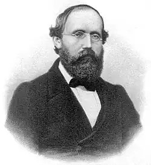
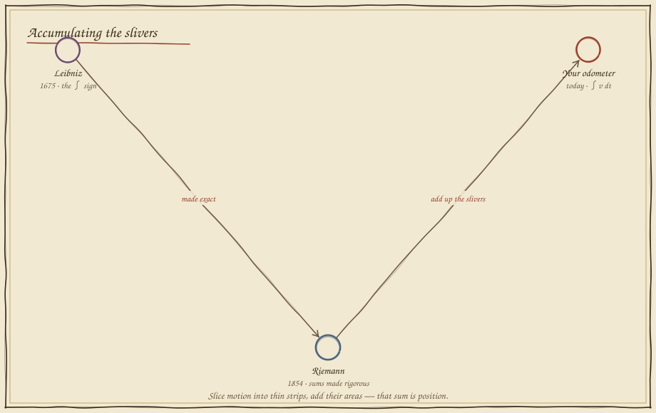
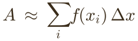
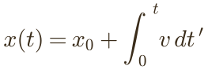

Adding Up Motion
In which a robot with no GPS must know where it is from its wheels alone, by adding up a thousand tiny moments — and watching its certainty quietly erode.
Speed now tells you nothing about here
Indoors, the satellites are gone. The robot knows only how fast its wheels are turning at each instant — its velocity. The door is at 20 metres. Is the robot there yet? Knowing the current speed cannot answer that; only the accumulation of every speed since the start can. Slide time and watch the running total climb.
Position is the area under the speed curve — every sliver of "speed × a moment of time," laid side by side. To find it, the robot must add up an unending stream of vanishingly thin strips. That sum has a name and a long elegant symbol: the integral, ∫.
Accumulating the slivers
The integral is the derivative run backwards — Leibniz saw that first and drew its sign; two centuries later Riemann made "add up infinitely many infinitely thin strips" into something airtight.



A sum of rectangles
Cut the run into n strips, and approximate each by a rectangle: its height is the speed there, its width a slice of time, its area a little distance. Add them. Few strips give a crude answer; slide toward many and the staircase melts onto the true curve — the integral is the limit of that sum.


Dead reckoning, and the drift
Let the robot integrate its own wheel speed, moment by moment, to track where it is — this is dead reckoning. With a perfect sensor it lands exactly on the truth: integration inverts the velocity flawlessly. But give the wheel the faintest constant bias, and every step inherits it — the small error accumulates, and the robot slowly convinces itself it is somewhere it is not.
Zero bias and the two robots ride in lockstep — proof that position truly is the integral of velocity. Nudge the bias and the estimate peels away, a little more each second. This is why a wheeled robot cannot dead-reckon forever, and why Folio 18 will teach it to fold in landmarks and probabilities to pull its belief back to the truth.
What you can now build
Odometry, the accumulated heading of a gyroscope, motor charge over time, the area under any sensor trace, the "I" term of a PID controller — all are integrals, all are Riemann's sum of slivers. Derivative and integral together (Folios 11 and 12) are the two directions of motion: rate and accumulation, tied by Leibniz's Fundamental Theorem. With them, Stage III can describe motion exactly. Folio 13 closes it with a twist — numbers that, when multiplied, rotate.
Field exercise: walk at a steady pace counting seconds, and mark the floor each second. The marks are your Riemann rectangles; their total is the integral of your speed — your position, reconstructed from motion alone, exactly as a blind robot must.
continue to folio 13 — numbers that rotate return to the codex map